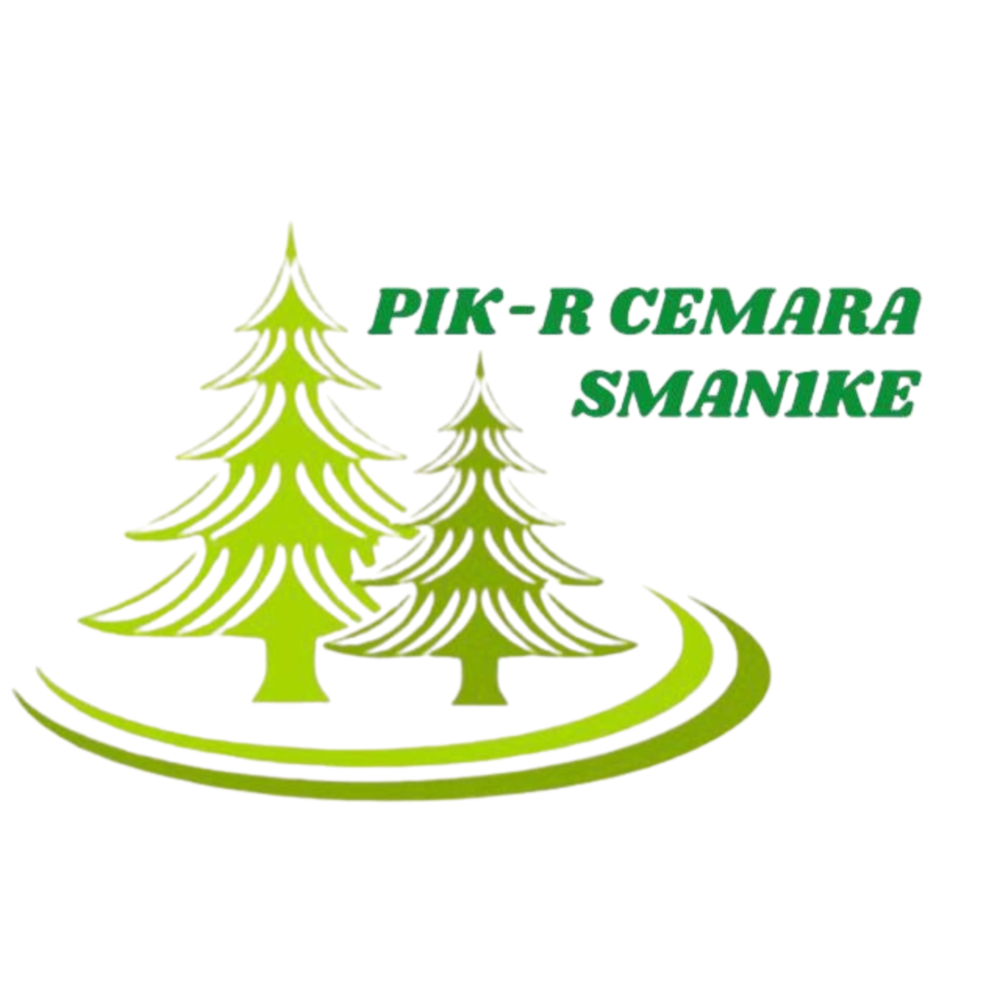
Hadir sebagai ruang aman, suportif, dan kolaboratif bagi remaja untuk bertumbuh bersama.
Buat Laporan / Curhat di Sini 💬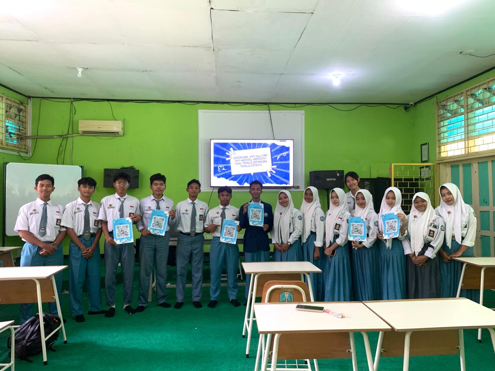
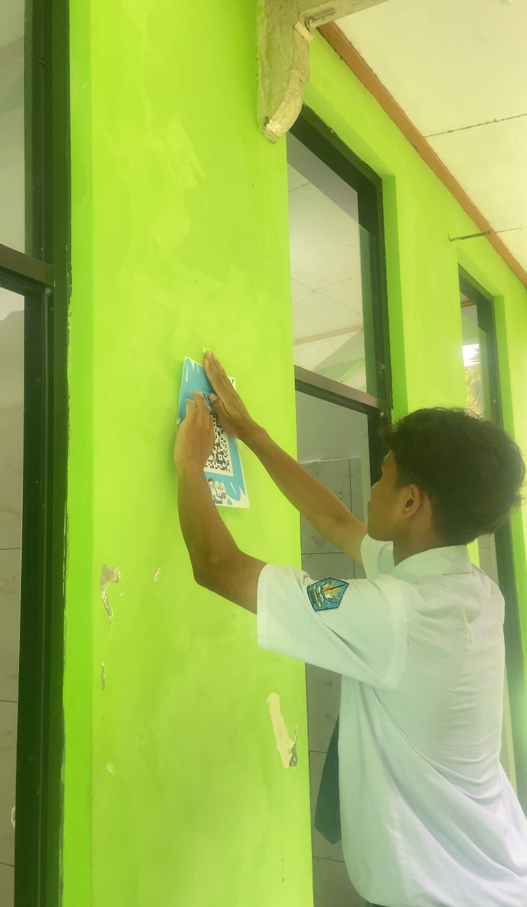
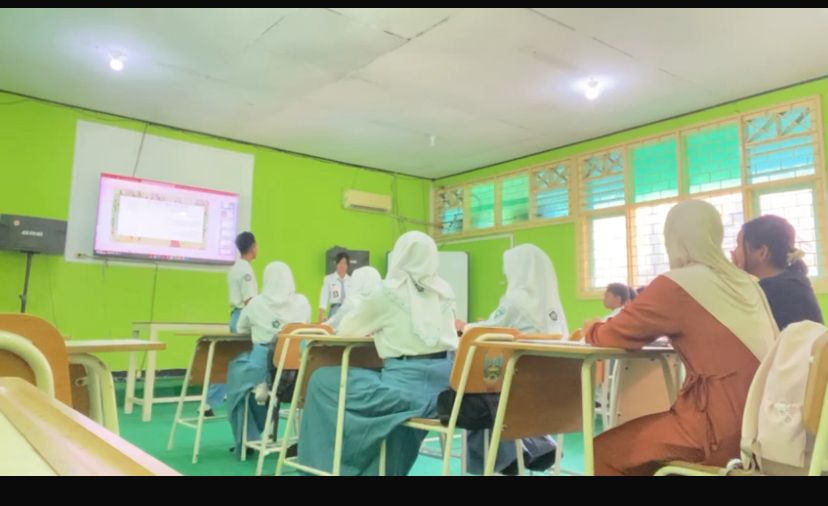
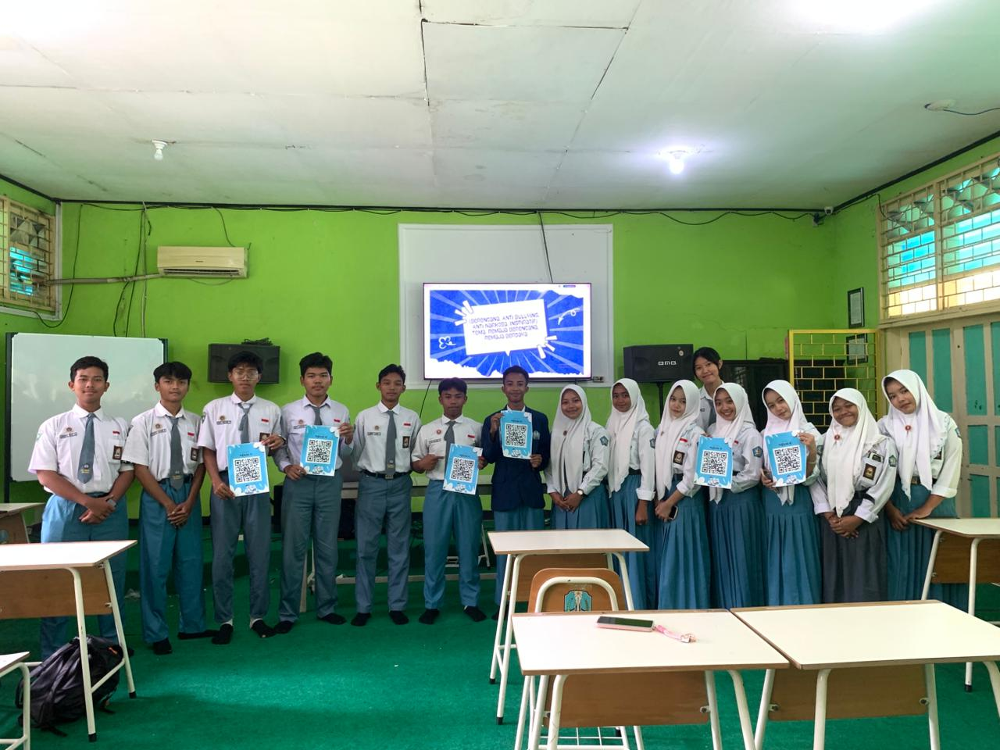
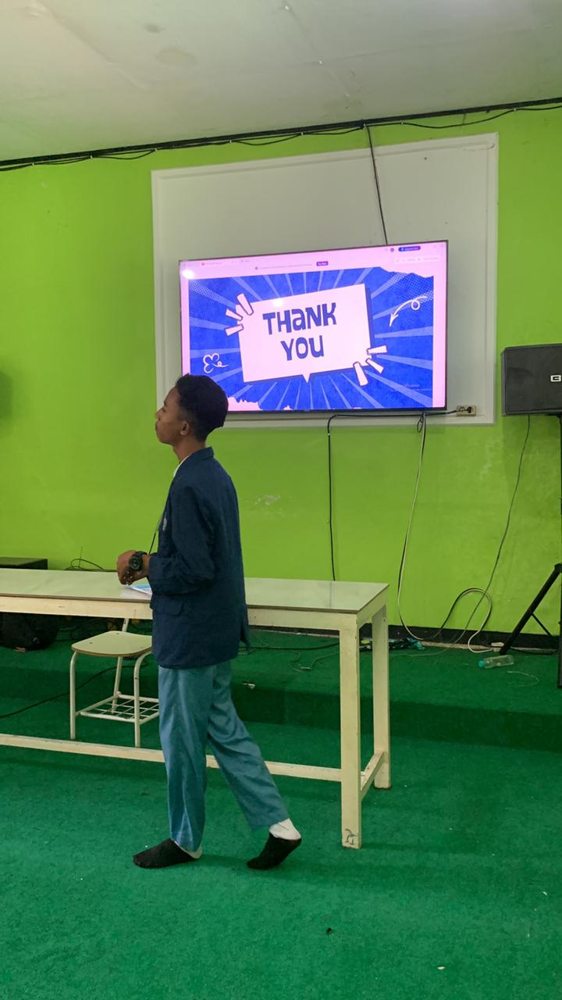
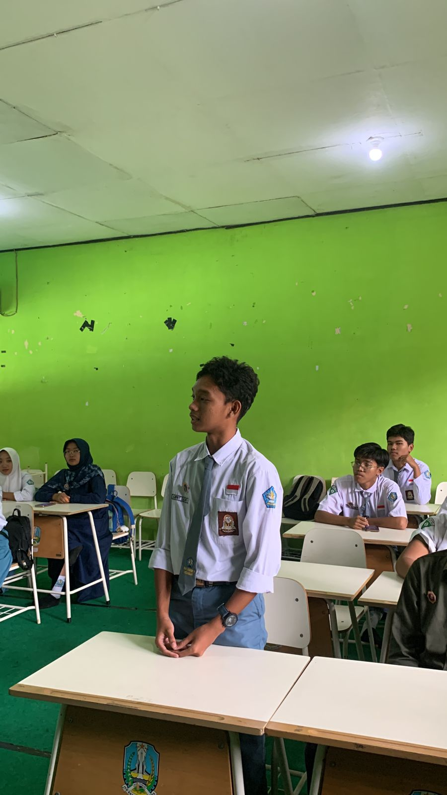
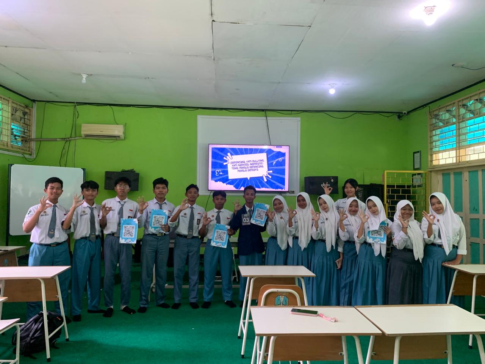
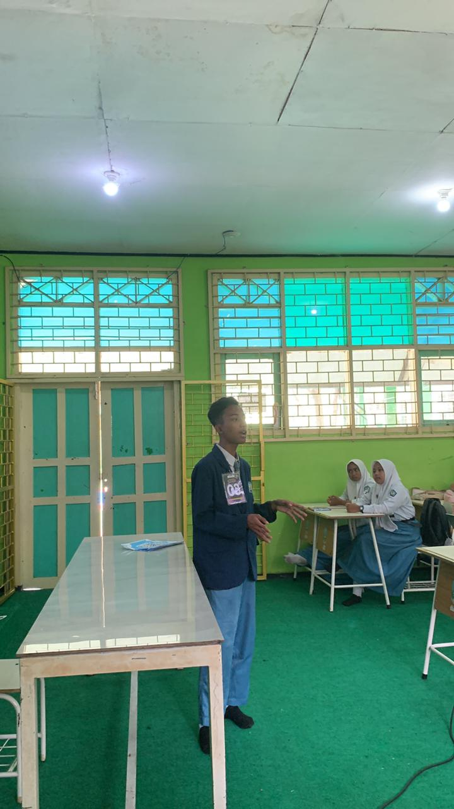
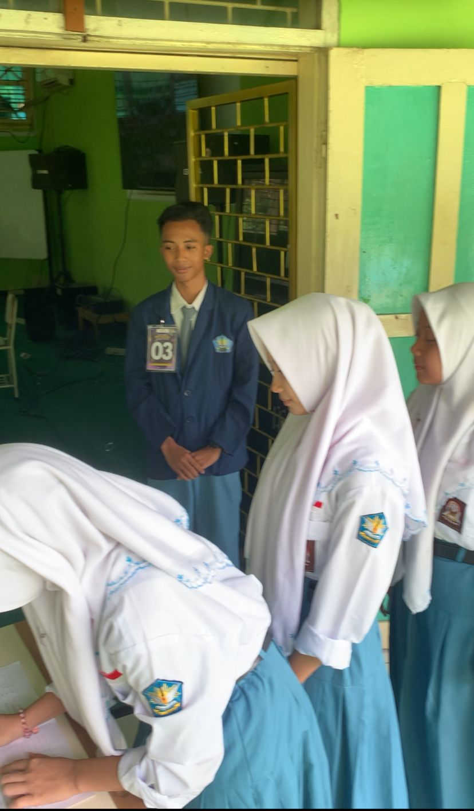
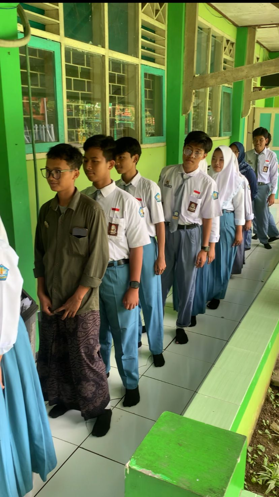
Mendorong remaja untuk mampu mengambil keputusan yang bijak dan bertanggung jawab.
Menanamkan sikap berintegritas, beretika, dan saling menghargai.
Memberikan kontribusi nyata bagi lingkungan sekolah dan masyarakat.
Menghadirkan program dan pendekatan yang kreatif serta relevan.